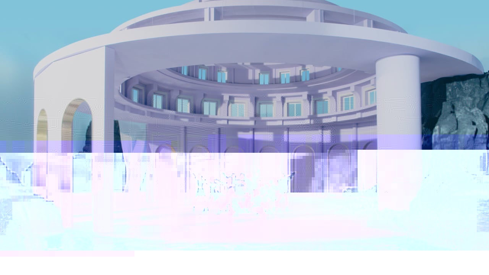
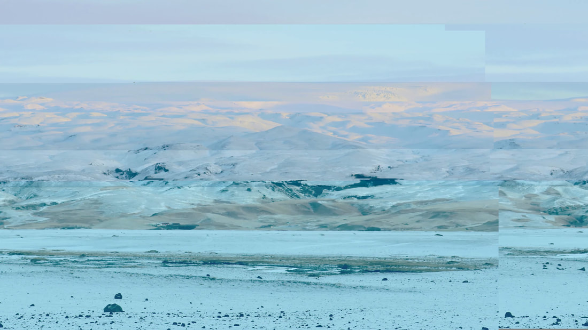
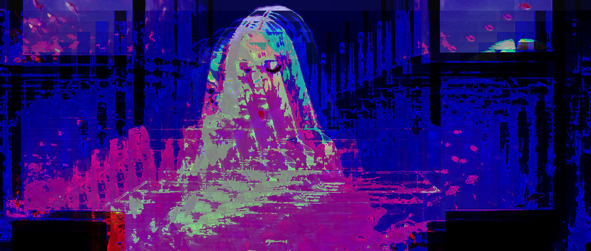

The following images have been altered with NotePad++ and Audacity. The music videos are "Butterfly," "Let Me in," and "Singing in the Rain"
by South Korean girl group LOONA. Click on the images to see their corresponding music video!
LOONA are a South Korean girl group, who I greatly respect and admire. Their music includes themes of love, betrayal, confidence, and much more.
Bringing diversity in their music video while
also representing the LBGTQ+ community, LOONA have been able to attract a diverse and colorful fanbase. Their music videos are beautiful in color
palettes as well as their artistic direction.
To me, glitching these images is a way to reinvent the music video, while paying homage to the group, whose music has changed the way I look at my own life.

1280 x 720 pixels

1280 x 720 pixels

1280 x 720 pixels